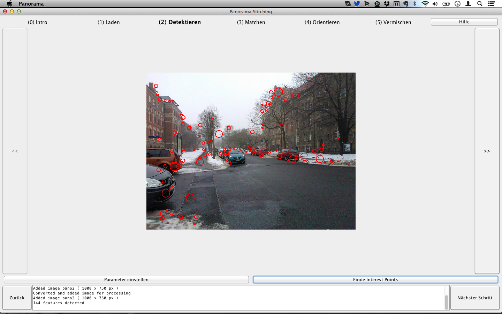

Um die geladenen Bilder orientieren zu können, müssen zuerst markante Punkte (Interest Points) in ihnen gefunden werden. Das geschieht mit Hilfe des Fast Hessian Feature Detectors, die gefundenen Interest Points werden dann mit dem SURF Feature Descriptor (Speeded Up Robust Features) beschrieben.
Mit dem Button Finde Interest Points werden im aktuellen Bild IPs gefunden und mit roten Kreisen markiert. Über die Buttons << und >> wird zwischen den geladenen Bildern hin und her geschalten. Der Button Parameter einstellen öffnet einen Dialog mit dem die Parameter für den Fast Hessian Feature Detector angegeben werden können. Es ist nicht nötig alle Bilder durchzugehen und IP manuell zu detektieren, nach einem Klick auf Nächster Schritt werden alle IPs in noch nicht verarbeiteten Bildern automatisch gesucht.
